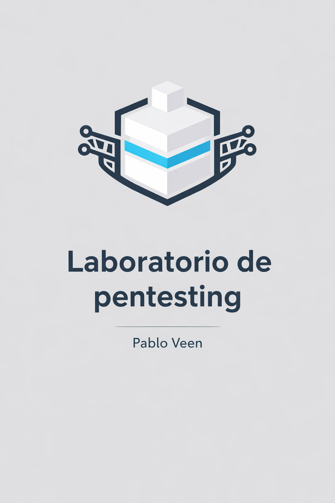

Proyecto Intermodular
Alumno: Pablo Veen
Curso: 2º CFGS Administración de Sistemas Informáticos en Red
Centro: IES Camp de Morvedre
Fecha: Febrero 2026
Este proyecto nace de la necesidad de contar con un entorno informático flexible, controlado y bien organizado, que permita un control total de los datos y el acceso a distintas plataformas de trabajo.
Como informático, resulta fundamental disponer de diferentes sistemas operativos y herramientas, tanto en entornos Windows como Linux, correctamente estructurados y separados según su función. Esta segmentación facilita el mantenimiento, la seguridad y la estabilidad del sistema.
Además, la incorporación de un sistema NAS se considera un elemento clave para la organización personal, la centralización de la información y la protección de datos valiosos, permitiendo copias de seguridad y un acceso fiable a los recursos. Todo ello da lugar a un entorno de trabajo seguro, versátil y eficiente.
Diseñar e implementar un laboratorio informático multi-sistema capaz de ejecutar entornos Windows y Linux de forma simultánea y aislada.
Configurar y validar al menos tres sistemas operativos diferentes, asegurando su correcto funcionamiento y acceso independiente.
Organizar las aplicaciones, servicios y entornos de trabajo mediante una estructura lógica y segmentada, facilitando su gestión y mantenimiento.
Implementar un sistema NAS operativo para la centralización del almacenamiento, garantizando la disponibilidad, integridad y seguridad de los datos.
Establecer mecanismos básicos de protección y control de la información, como copias de seguridad y separación de datos según su uso.
Documentar el proceso de diseño, configuración y puesta en marcha del laboratorio, verificando que cumple los objetivos técnicos definidos.
En el contexto tecnológico actual, gran parte de los servicios y recursos informáticos dependen de plataformas en la nube gestionadas por grandes corporaciones. Este modelo, aunque ofrece comodidad y escalabilidad, implica una dependencia económica y técnica significativa, además de una cesión del control de los datos a terceros.
Desde un punto de vista de seguridad y privacidad, esta situación genera desconfianza, ya que la información queda sujeta a políticas externas y a posibles brechas fuera del control del usuario.
Ante esta realidad, se considera necesario disponer de una infraestructura propia, capaz de ejecutar servicios y aplicaciones de forma local, garantizando una mayor fiabilidad, control y seguridad de los datos. Asimismo, comprender el funcionamiento real de Internet, las comunicaciones y las amenazas actuales resulta clave para estar preparado frente a ataques y vulnerabilidades.
Este proyecto surge como respuesta a la necesidad de defensa local, mediante la creación de entornos controlados donde se puedan desplegar sistemas de monitorización, honeypots y mecanismos de detección y respuesta ante amenazas. En un entorno cada vez más centralizado, disponer de infraestructuras propias se convierte en una medida esencial para proteger la información y reforzar la seguridad de forma independiente.
Desde el punto de vista del usuario avanzado, esta dependencia limita la capacidad de personalización, experimentación y aprendizaje profundo sobre el funcionamiento real de los sistemas. Además, muchas soluciones comerciales abstraen en exceso los procesos internos, dificultando la comprensión de aspectos clave como la gestión de redes, la seguridad, el almacenamiento o la administración de servicios.

El entorno tecnológico actual presenta una alta dependencia de servicios externos, especialmente plataformas en la nube, lo que reduce el control directo sobre los datos y los sistemas. Esta situación limita la visibilidad del tráfico, dificulta la respuesta ante incidentes y condiciona la privacidad a políticas de terceros.
[problematicas]
dependencia_externa = alta
control_sobre_datos = limitado
visibilidad_trafico_red = reducida
privacidad = condicionada_por_terceros
respuesta_ante_incidentes = reactiva
Estas problemáticas evidencian la falta de autonomía y la dificultad para aplicar medidas de seguridad efectivas cuando la infraestructura no es propia.
[necesidades técnicas]
infraestructura_local = true
ejecucion_multisistema = windows, linux
seguridad_activa = necesaria
almacenamiento_centralizado = true
control_total_datos = prioritario
Ante esta situación, surge la necesidad de diseñar un laboratorio informático propio que permita:
El proyecto debe recuperar el control del entorno, permitiendo una gestión directa y flexible de los sistemas y la información a costa de conocimientos, ingenio y algo de dinero.

El alcance de este proyecto no se encuentra completamente definido desde el inicio, y esta indefinición no es un error, sino una decisión consciente ligada a la naturaleza experimental del laboratorio.
Uno de los elementos centrales del proyecto es la incorporación de un sistema NAS. Este tipo de infraestructura resulta extremadamente útil como nube privada, permitiendo centralizar información, compartir recursos entre sistemas y facilitar copias de seguridad. Sin embargo, su exposición o apertura a Internet conlleva riesgos significativos de seguridad, especialmente si no se implementan medidas avanzadas de protección.
De forma similar, la posibilidad de integrar APIs y aplicaciones externas para ampliar funcionalidades resulta muy atractiva desde el punto de vista técnico. No obstante, esta integración introduce los mismos problemas de fondo: aumento de la superficie de ataque, dependencia de servicios externos y pérdida parcial de control sobre los datos.
Por este motivo, el proyecto se plantea con un alcance flexible y progresivo, en el que:
Este enfoque permite que el laboratorio crezca de forma controlada, evitando comprometer la integridad del sistema por decisiones prematuras.
En resumen, el alcance del proyecto no se define como un conjunto cerrado de funcionalidades, sino como una base sólida sobre la que experimentar, evaluar riesgos y decidir conscientemente hasta dónde avanzar.
Desde el punto de vista de la viabilidad técnica, es evidente que el proyecto presenta un nivel de complejidad elevado. La combinación de múltiples sistemas operativos, virtualización, almacenamiento centralizado y conceptos de seguridad puede superar, en determinados momentos, mis conocimientos.
No obstante, esta dificultad no representa un impedimento real. Al contrario, el proyecto se concibe precisamente como un reto formativo, en el que el aprendizaje continuo, la investigación autónoma y la resolución de problemas forman parte del propio proceso de desarrollo.
En cuanto a la viabilidad práctica, el proyecto se apoya en:
Esto permite avanzar por fases, probar, equivocarse y corregir sin poner en riesgo el conjunto del sistema.
Desde una perspectiva personal, la posible superación de los conocimientos actuales nunca ha sido un factor limitante, sino un incentivo. El proyecto es viable precisamente porque se asume que el aprendizaje forma parte del camino y no un requisito previo cerrado.
En conclusión, el proyecto es viable tanto a nivel técnico como formativo, siempre que se mantenga un enfoque progresivo, crítico y orientado a la seguridad.

La solución se diseña como un laboratorio segmentado y controlado, compuesto por tres equipos físicos con funciones diferenciadas:
Aunque los sistemas pueden conectarse entre sí cuando sea necesario, el objetivo es que cada bloque sea operativo de forma independiente, reduciendo dependencias y limitando el impacto ante fallos o incidentes.
La máquina principal está pensada como entorno flexible de trabajo y pruebas, con tres sistemas instalados en discos separados para garantizar aislamiento a nivel de almacenamiento y facilitar recuperación / reinstalación sin afectar al resto.
[ Máquina principal ]
├─ Disco 1: Windows
├─ Disco 2: Ubuntu
└─ Disco 3: Proxmox
Idea clave: los sistemas pueden compartir recursos solo si se decide explícitamente, pero por defecto se mantienen separados.
Este planteamiento permite elegir el modo de trabajo según el objetivo del momento: estación de trabajo directa (Windows/Ubuntu) o laboratorio virtualizado (Proxmox).
La máquina NAS se plantea como un nodo independiente orientado a:
El diseño asume que el NAS es útil, pero que también puede convertirse en un punto crítico si se expone de forma incorrecta. Por ello, su papel se concibe como:
servicio interno por defecto, y “nube” solo si se justifica y se blinda correctamente.
La máquina IDS actúa como componente de seguridad y observación del laboratorio. Su función es aportar visibilidad sobre el tráfico y los eventos relevantes, permitiendo detectar comportamientos sospechosos o anomalías.
Su papel dentro del diseño es claro:
La arquitectura contempla que los componentes puedan enlazarse, pero no lo necesitan para funcionar. Se prioriza un enfoque de conexión “bajo demanda”:
(enlace opcional / controlado)
[ Máquina principal ] <-----> [ NAS ]
|
| (monitorización)
v
[ IDS ]
Este enfoque permite probar escenarios distintos:
La separación en tres equipos y la instalación por discos independientes responde a tres objetivos:
En conjunto, la arquitectura no busca complejidad gratuita, sino una base sólida que permita experimentar con garantías, escalando el alcance solo cuando sea razonable.

En esta fase se realiza una revisión del hardware disponible, la planificación del uso de discos y la definición inicial de la arquitectura del laboratorio.
Principales tareas:
Objetivo de la fase:
dejar el entorno listo para comenzar las instalaciones
Esta fase se centra en la configuración de la máquina principal, instalando los sistemas operativos en discos independientes para garantizar el aislamiento definido en la arquitectura.
Principales tareas:
Objetivo de la fase:
disponer de una estación multi-sistema estable y operativa.
Una vez validado el sistema base, se trabaja sobre Proxmox como entorno de laboratorio.
Principales tareas:
Objetivo de la fase:
contar con un laboratorio virtual seguro y flexible para pruebas y aprendizaje.
En esta fase se configura la máquina destinada a almacenamiento y servicios asociados.
Principales tareas:
Objetivo de la fase:
disponer de un sistema de almacenamiento funcional sin comprometer la seguridad.
Esta fase introduce el componente de seguridad del laboratorio.
Principales tareas:
Objetivo de la fase:
añadir visibilidad y control sobre la actividad del laboratorio.
En la última fase se evalúa el funcionamiento conjunto de los distintos sistemas, siempre manteniendo la posibilidad de aislamiento.
Principales tareas:
Objetivo de la fase:
validar la coherencia global del diseño y extraer conclusiones realistas.
La planificación está pensada para adaptarse a la evolución real del proyecto. Algunas fases pueden ampliarse o simplificarse en función de los resultados obtenidos, manteniendo siempre una visión crítica sobre la seguridad y la estabilidad del sistema.
Este enfoque permite que el proyecto avance de forma realista, formativa y controlada, priorizando la calidad del aprendizaje frente a la complejidad innecesaria.

La máquina principal se implanta como un sistema multiarranque con discos físicos independientes, lo que permite separar completamente los entornos y evitar interferencias entre sistemas operativos.
Este sistema se mantiene aislado del resto y se utiliza únicamente cuando se requiere compatibilidad con software específico.
Ubuntu actúa como entorno Linux estable para tareas de gestión y apoyo técnico.
Una vez implantado, Proxmox se utiliza exclusivamente como entorno de laboratorio y pruebas virtualizadas.
Sobre Proxmox se despliegan máquinas virtuales destinadas a pruebas y aprendizaje, manteniendo siempre el principio de aislamiento.
Tareas realizadas:
Este entorno permite experimentar sin afectar a los sistemas instalados directamente en hardware.
La máquina NAS se implanta como un nodo independiente del resto del laboratorio.
La exposición del NAS se mantiene mínima y siempre bajo criterios de seguridad.
La implantación del sistema IDS se realiza en una máquina dedicada, con el objetivo de monitorizar el tráfico generado dentro del laboratorio.
Tareas realizadas:
El IDS se utiliza como herramienta de observación y aprendizaje, no como sistema automático de bloqueo.
Una vez implantados todos los componentes, se realizan pruebas conjuntas para validar el diseño propuesto.
Pruebas realizadas:
Estas pruebas permiten confirmar que cada sistema cumple su función sin depender de los demás.
Durante todo el proceso de implantación se documentan:
Esta documentación resulta clave tanto para la evaluación del proyecto como para futuras ampliaciones o mejoras.

El proyecto se apoya en gran medida en hardware ya disponible, pero para realizar una valoración realista se tienen en cuenta tanto los equipos existentes como los elementos que ha sido necesario adquirir o fabricar. De este modo, el presupuesto refleja el coste real del laboratorio, independientemente de si los recursos ya estaban disponibles previamente.
| Recurso | Descripción | Coste estimado (€) |
|---|---|---|
| Equipo principal | Placa base Gigabyte A520M S2H | 80 |
| AMD Ryzen 5 5500 | 100 | |
| NVMe 500 GB | 100 | |
| GPU RTX 3060 Ti | 300 | |
| Fuente de alimentación | 70 | |
| RAM 32 GB | 500 | |
| HDD 500 GB | 1 unidad | 100 |
| Subtotal equipo principal | ** 1250€** |
| Recurso | Descripción | Coste estimado (€) |
|---|---|---|
| Portátil Lenovo G50-80 (modificado) | General | 250 |
| HDD 500 GB | 2 unidades | 200 |
| HDD 1 TB | 1 unidad | 125 |
| HDD 4 TB | 1 unidad | 175 |
| Subtotal equipo secundario | 750 € |
| Recurso | Descripción | Coste estimado (€) |
|---|---|---|
| Raspberry Pi 1 | Nodo IDS | 30 |
| Pantalla para Raspberry Pi | Pantalla pequeña dedicada | 70 |
| Subtotal IDS | 100 € |
| Recurso | Descripción | Coste estimado (€) |
|---|---|---|
| Expansion slot NVMe | Tarjeta de ampliación | 15 |
| Capturadora de vídeo | Acceso remoto / control | 20 |
| Cable encendido remoto | Encendido de equipos desde portátil | 10 |
| switch de red | Expansión de conectividad | 200 (opcional) |
| Cables adicionales | Alimentación, red y señal | 50 |
| Material rack | Madera + impresión 3D | 150 |
| Subtotal extras | 445 € |
| Concepto | Coste (€) |
|---|---|
| Equipo principal | 1250 |
| Equipo secundario | 750 |
| Sistema IDS | 100 |
| Extras y expansión | 445 |
| Total estimado del proyecto | 2.545 € |
Cabe destacar que el uso de hardware reutilizado, la construcción artesanal del rack y el empleo de software libre han permitido contener el gasto, sin renunciar a una arquitectura sólida y funcional. Asimismo, algunos elementos, como el switch de red, se consideran opcionales, quedando su adquisición supeditada a las necesidades finales del laboratorio.

La seguridad es un aspecto transversal del proyecto y se tiene en cuenta desde el diseño de la arquitectura hasta la implantación de los distintos sistemas. El laboratorio se concibe como un entorno de pruebas y aprendizaje, pero sin perder de vista que cualquier sistema mal configurado puede convertirse en un riesgo real, incluso en un entorno doméstico.
Por este motivo, se adopta un enfoque preventivo basado en el aislamiento, el control y la observación, evitando exposiciones innecesarias y priorizando la seguridad frente a la comodidad.
Los sistemas que componen el laboratorio se mantienen, por defecto, aislados entre sí, permitiendo la interconexión únicamente cuando es estrictamente necesaria y bajo condiciones controladas.
Las principales medidas de seguridad adoptadas son:
Este planteamiento reduce significativamente el impacto de errores de configuración o fallos de seguridad.
Se presta especial atención a los sistemas de pruebas y entornos experimentales, especialmente aquellos desplegados en el entorno de virtualización. Este tipo de sistemas, si no se gestionan adecuadamente, pueden convertirse de forma involuntaria en honeypots, atrayendo tráfico malicioso o intentos de acceso no deseados.
Este riesgo es especialmente relevante en los siguientes escenarios:
Para mitigar estos riesgos se aplican las siguientes medidas:
El objetivo no es evitar el riesgo por completo, sino entenderlo, controlarlo y aprender de él sin comprometer el resto del laboratorio.
El sistema NAS se considera un punto crítico dentro del laboratorio, ya que centraliza información y datos potencialmente sensibles.
Las medidas de seguridad aplicadas incluyen:
La posibilidad de utilizar el NAS como nube privada se contempla únicamente bajo un análisis previo de riesgos, evitando exposiciones innecesarias que puedan comprometer la integridad de los datos.
El proyecto se desarrolla en un entorno personal y educativo, con fines formativos y de aprendizaje. No se realizan actividades orientadas a la intrusión en sistemas externos ni a la vulneración de servicios de terceros.
Se respetan en todo momento los principios básicos de legalidad, uso ético de herramientas de seguridad y responsabilidad técnica.
Además de los riesgos lógicos, se tienen en cuenta los riesgos técnicos y físicos asociados al uso de hardware y sistemas electrónicos.
Medidas adoptadas:
La seguridad en este proyecto no se entiende como un estado final, sino como un proceso continuo. Cada ampliación del laboratorio implica una nueva evaluación de riesgos y una revisión de las medidas adoptadas.
Este enfoque permite adquirir una visión realista de la seguridad informática, entendiendo que incluso los entornos de pruebas pueden tener consecuencias reales si no se gestionan con criterio.

El plan de calidad tiene como objetivo verificar que los distintos componentes del proyecto funcionan de forma estable, coherente y segura, cumpliendo con los requisitos definidos en el diseño y la planificación.
No se busca alcanzar un nivel de certificación formal, sino aplicar criterios realistas de validación, acordes al carácter formativo y experimental del laboratorio.
Para evaluar la calidad del sistema se tienen en cuenta los siguientes criterios:
Un sistema se considera válido cuando cumple su función sin afectar negativamente al resto del laboratorio.
Se realizan pruebas específicas sobre cada uno de los sistemas instalados en la máquina principal.
Pruebas realizadas:
Estas pruebas garantizan que la separación por discos se mantiene correctamente.
En el entorno Proxmox se realizan pruebas orientadas a validar el aislamiento y la flexibilidad del laboratorio virtual.
Pruebas realizadas:
Estas pruebas permiten confirmar que el entorno virtual es adecuado para prácticas de seguridad y experimentación.
El sistema NAS se somete a pruebas centradas en la disponibilidad y la integridad de los datos.
Pruebas realizadas:
El objetivo es asegurar que el almacenamiento es fiable y no introduce riesgos innecesarios.
El sistema IDS se valida mediante escenarios de tráfico controlados.
Pruebas realizadas:
Estas pruebas permiten evaluar la utilidad real del IDS como herramienta de observación y aprendizaje.
Una vez validados los sistemas de forma individual, se realizan pruebas conjuntas.
Pruebas realizadas:
Estas pruebas permiten comprobar que el laboratorio responde correctamente tanto en escenarios estables como en situaciones adversas.
Durante las pruebas se registran:
Este registro permite mejorar progresivamente el laboratorio y sirve como base para futuras ampliaciones o ajustes.
El plan de calidad confirma que el laboratorio cumple con los objetivos propuestos y que su diseño permite detectar, analizar y corregir problemas de forma controlada. La calidad del proyecto no se basa únicamente en el resultado final, sino en la capacidad de evaluación crítica y mejora continua.

El desarrollo del proyecto ha permitido implantar un laboratorio funcional compuesto por sistemas claramente separados, pero con capacidad de interconexión controlada. La arquitectura planteada se ha demostrado válida, permitiendo trabajar en distintos escenarios sin comprometer la estabilidad global del entorno.
Entre los principales resultados obtenidos destacan:
El laboratorio cumple así con los objetivos técnicos y formativos definidos al inicio del proyecto.
Este proyecto ha permitido aplicar de forma práctica conocimientos relacionados con sistemas operativos, virtualización, almacenamiento y seguridad informática. Más allá del resultado técnico, uno de los aspectos más relevantes ha sido la toma de decisiones conscientes, especialmente en lo referente a seguridad y alcance.
La experiencia ha puesto de manifiesto que no todas las funcionalidades técnicamente posibles son necesariamente recomendables. Elementos como la exposición de servicios, el uso de sistemas de pruebas o la centralización del almacenamiento requieren un análisis constante de riesgos, incluso en entornos personales.
El proyecto demuestra que una arquitectura bien pensada, basada en aislamiento y control, permite experimentar de forma segura y realista, evitando errores habituales derivados de configuraciones improvisadas.
El diseño del laboratorio permite numerosas ampliaciones, que se plantean siempre como evoluciones controladas y no como cambios inmediatos.
Algunas posibles mejoras futuras son:
Cualquier ampliación futura se realizará manteniendo los principios básicos del proyecto: aislamiento, seguridad, control y aprendizaje progresivo.
El laboratorio desarrollado constituye una base sólida para seguir aprendiendo y experimentando en el ámbito de la administración de sistemas y la seguridad informática. Lejos de ser un entorno cerrado, se presenta como una plataforma viva, capaz de evolucionar a medida que aumentan los conocimientos y las necesidades técnicas.
Este proyecto no se limita a demostrar lo que ya se sabe hacer, sino que refleja una actitud crítica y responsable frente a la tecnología, entendiendo que la seguridad y la estabilidad son tan importantes como la funcionalidad.